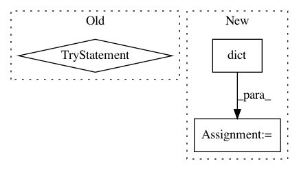

61a0663a45beb2e59f6a549c51d55940c80734e3,niftynet/io/image_as_nibabel.py,,,#,11
Before Change
from PIL import Image
try:
// Check whether scikit-image is installed in the system and use it.
// It loads images slightly faster then PIL.
// Only use scikit-image if installed version is 0.13.0 or newer
from niftynet.utilities.util_import import require_module
SKIO = require_module("skimage.io", (0, 13, 0))
USE_SKIMAGE = True
tf.logging.info("+++ Using SKIMAGE as Image Loading backend")
except (ImportError, AssertionError):
tf.logging.info("+++ Using PIL as Image Loading backend")
USE_SKIMAGE = False
def image2nibabel(filename):
Loads a RGB or Grayscale Image from a file and stores it in a 5D array,
moving the color channels to the last axis for color images.
After Change
EXTERNAL_LOADERS = [
dict(name="opencv", module="cv2", method="imread", kwargs=dict(flags=-1)),
dict(name="skimage", module="skimage.io", method="imread", version="0.13"),
dict(name="pillow", module="PIL.Image", method="open")
]
AVAILABLE_LOADER = OrderedDict()
for loader in EXTERNAL_LOADERS:
try:
// Default params
min_ver = loader.get("version", None)
args = loader.get("args", tuple())
kwargs = loader.get("kwargs", dict())
// Retrieve external function
external_module = require_module(loader["module"], min_version=min_ver)
external_function = getattr(external_module, loader["method"])
// Save loader params
loader_dict = dict(fn=external_function, args=args, kwargs=kwargs)
except (ImportError, AssertionError, AttributeError):
continue
AVAILABLE_LOADER[loader["name"]] = loader_dict
tf.logging.info("+++ Available Image Loaders {}:"
.format(list(AVAILABLE_LOADER.keys())))
In pattern: SUPERPATTERN
Frequency: 3
Non-data size: 3
Instances
Project Name: NifTK/NiftyNet
Commit Name: 61a0663a45beb2e59f6a549c51d55940c80734e3
Time: 2018-03-05
Author: rmaplue@ucl.ac.uk
File Name: niftynet/io/image_as_nibabel.py
Class Name:
Method Name:
Project Name: google/tangent
Commit Name: 31269a5197170026985db35c4703cc6e9c805ebf
Time: 2017-11-10
Author: bart.vanmerrienboer@gmail.com
File Name: tangent/reverse_ad.py
Class Name: ReverseAD
Method Name: visit_Call
Project Name: dmlc/gluon-cv
Commit Name: 4b8716fd4bd6f462a9db9eee958f2508576ec019
Time: 2018-06-15
Author: cheungchih@gmail.com
File Name: gluoncv/utils/metrics/coco_detection.py
Class Name: COCODetectionMetric
Method Name: __init__